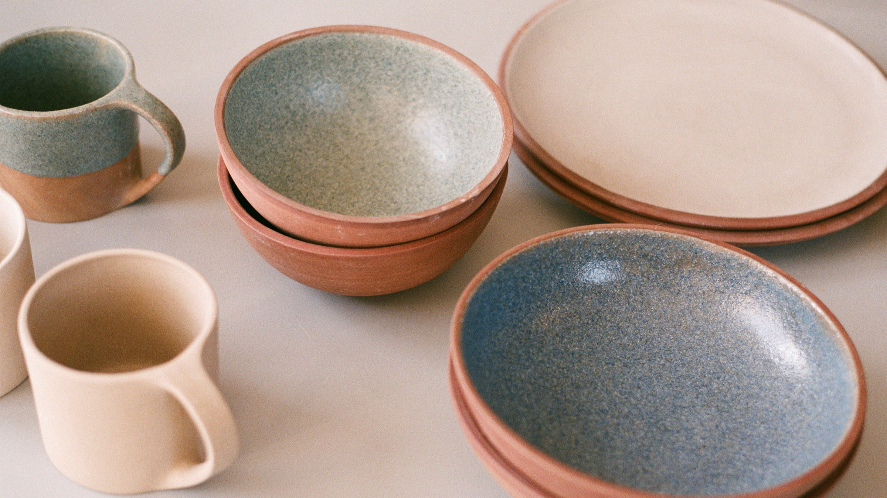

We invite you to explore our collection and experience the artistry and beauty of our ceramics firsthand.

Welcome to Ceramix Co., your premier destination for exquisite and diverse ceramics. Based in the vibrant
city of Delhi, India, our company prides itself on creating a wide range of captivating ceramic products.
From delicate pottery to elegant home decor items, we offer an extensive collection to cater to every taste
and style.
At Ceramix, we believe in providing exceptional quality and craftsmanship. Our team of skilled artisans
meticulously handcrafts each piece, ensuring meticulous attention to detail and unique designs that will
elevate any space. We strive to blend traditional techniques with contemporary aesthetics, resulting in
timeless and stunning creations.
For those seeking bulk orders, we gladly accommodate your requirements. Please reach out to us via
email-[just.ajalify@gmail.com] and our dedicated team will promptly assist you. We understand the importance
of personalized service and are committed to meeting your specific needs.
Thank you for choosing Ceramix Co.